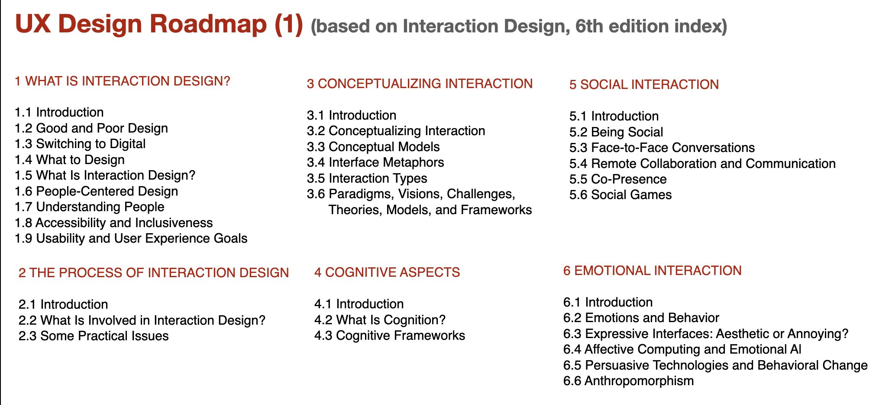
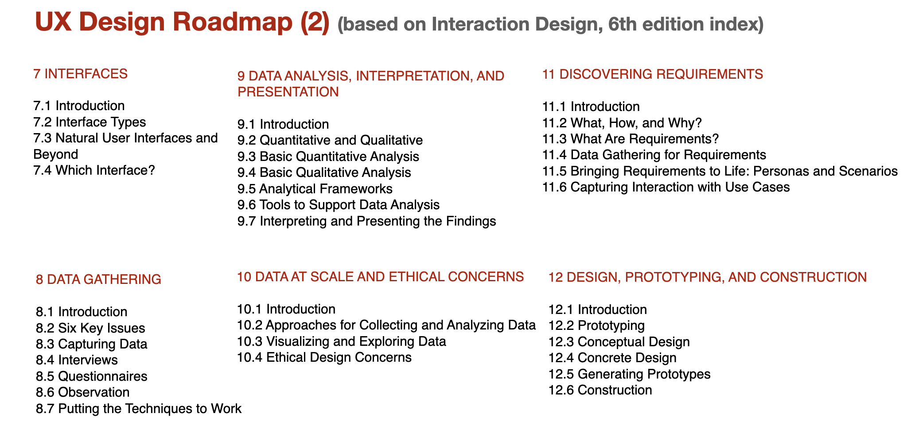
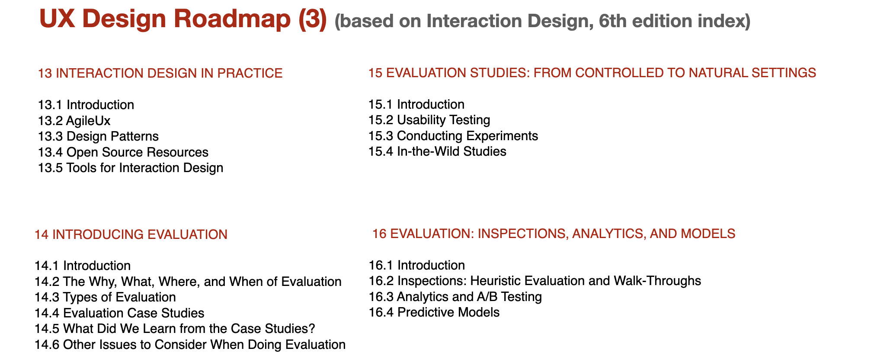

1 Week 1. UX Design Roadmap
2 UX Design(2) 에서 다루는 것과 다루지 않는것>
2.1 UX Design(2)에서 다루는 것:
2.1.1 서비스 디자인, 데이터기반디자인(정량적, 통계적 방법론), 설문 조사, A/B testing, Lean Design Process, 디자인 리서치 포트폴리오
2.2 UX Design(2)에서 다루지 않는 것:
2.2.1 정성적 디자인 방법론, 브랜딩/캐릭터 디자인, 앱, GUI, Motion 디자인 포트폴리오, 데이터 분석 프로그래밍(코딩), UX Design 기초, 사용자 리서치 (관찰, 인터뷰 등 대면 방법론)
3 UX design Roadmap >
3.1 UX 디자인의 지식 체계는 어떻게 이루어져 있나?
3.2 UX 디자인에서 지금까지 무엇을 배웠고, 앞으로 무엇을 더 배워야 하는가?
3.3 UX 디자인의 트랜드는 무엇이며, 앞으로 어떤 방향으로 진행하는가?
Interaction Design - beyond Human-Computer Interaction
UX Design Road map (based on Interaction Design, 6th ed.)—→ 이거는 하나로 통합된 이미지로 제작 예정



3.4 AI의 시대 >
3.4.1 Jacob Nielson(NN group)이 말하는 UX에서의 AI 활용
업데이트된 영상으로 대체 예정
https://www.youtube.com/watch?v=mBu_LmD69tc
- AI를 활용하는 UX 디자인, UX 디자인 (자동화)도구로서의 AI
- 업무를 작게 쪼개어 패턴화 할 수 있고, 디지털화 할 수 있으면, 그리고 학습 가능한 데이터가 있으면 AI화 가능
- AI가 UX 비용을 싸게하면, UX 시장이 커진다.
업데이트 콘텐츠 대체
How to Use AI for UX Design: Tips and Tools for Product Teams in SaaS
3.4.2 UX design tools (with AI)
4 다음주 준비>
본인이 경험한 디자인 프로젝트 2개의 프로세스와 디자인 방법을 다이어그램으로 요약하고 평가하기
page 1: 프로젝트 개요, 디자인 컨셉, 디자인 해결안 포함
page 2: Process, Methodology diagram
page 3: 프로젝트의 디자인과 방법론 평가
프로젝트 당 3페이지 이내 보고서를 클래스룸 제출 (총 6페이지 이내)
보강해야할 UX 디자인 개념 공부하기